Escuela Profesional de Ingeniería de Sistemas
ISO/IEC 27001
Sistema de Gestión de Seguridad de la Información
Curso: Information Technology Audit · Docente: Costilla Retuerto Fernando Sosimo
- Delgado Evangelista, Piero Leonardo
- Fernandez Pardo, Jean Piers Smith
- Mendez Urbano, Pablo
- Tuesta Castro, Shon
- Villavicencio Romero, Renzo
- Yalle Juan de Dios, Rodherick
Fundamentos
De dónde viene la norma, quién la respalda y qué busca resolver antes de entrar en su contenido técnico. Esta base conceptual es indispensable para entender por qué la norma está estructurada como lo está.
- 01¿Qué es ISO/IEC 27001?
- 02Historia y evolución
- 03Organismo emisor
- 04Objetivo general
¿Qué es ISO/IEC 27001?
Es la norma internacional que establece los requisitos formales para implementar, mantener y mejorar un Sistema de Gestión de Seguridad de la Información (SGSI) dentro de una organización.
- Publicada conjuntamente por ISO (Organización Internacional de Normalización) e IEC (Comisión Electrotécnica Internacional).
- Forma parte de la familia de normas ISO/IEC 27000.
- Es aplicable a cualquier organización, sin importar su tamaño, sector o país.
- Versión vigente: ISO/IEC 27001:2022.
El objetivo no es eliminar el riesgo por completo, sino gestionarlo a un nivel aceptable para la organización.

Historia y evolución
La norma nació como un estándar británico y fue madurando junto con la digitalización de las organizaciones, hasta convertirse en la referencia internacional que es hoy.
BS 7799 — primer estándar británico de seguridad de la información.
ISO adopta la primera parte como ISO/IEC 17799.
Primera publicación oficial de ISO/IEC 27001.
Segunda edición, alineada a la estructura común Anexo SL.
Edición vigente — Anexo A reorganizado en 93 controles.
El estándar británico original nació de la necesidad de las empresas de demostrar buenas prácticas de seguridad ante sus propios clientes.
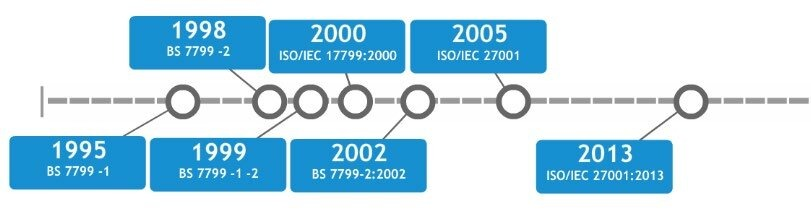
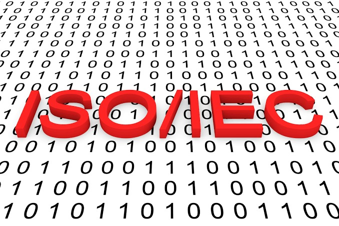
Organismo emisor
La norma es sostenida por dos organismos internacionales de normalización y un comité técnico especializado que la revisa periódicamente.
- ISO: red de institutos de normalización de más de 170 países.
- IEC: organismo internacional de normas eléctricas y electrónicas.
- Comité conjunto ISO/IEC JTC 1/SC 27, encargado de seguridad de la información.
- La norma se revisa y actualiza periódicamente (cada 5 a 8 años aprox.).
El comité SC 27 reúne a expertos de decenas de países que actualizan la norma por consenso técnico, no por decisión de una sola entidad.
Objetivo general
Más allá del certificado, la norma persigue un propósito concreto de gestión que impacta directamente en la operación de la organización.
La confidencialidad, integridad y disponibilidad de la información.
Los riesgos de seguridad mediante un enfoque sistemático y medible.
Ante clientes, socios comerciales y entes reguladores.
El cumplimiento mediante auditoría de un organismo acreditado.
Un SGSI bien implementado no elimina los incidentes, pero reduce su frecuencia y su impacto cuando ocurren.
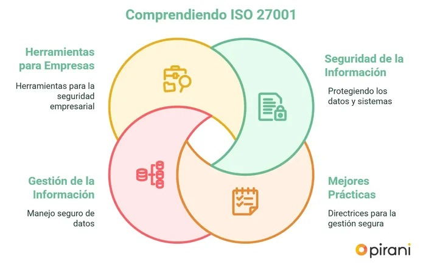
Marco conceptual
La familia de normas a la que pertenece, sus rasgos distintivos y el tipo de información que protege. Este bloque sienta el vocabulario que se usará en el resto de la presentación.
- 05Familia ISO/IEC 27000
- 06Características principales
- 07Tríada CIA
- 08Tipos de información protegida
La familia ISO/IEC 27000
ISO 27001 no está sola: pertenece a un conjunto de normas relacionadas, cada una con un rol distinto dentro de la gestión de la seguridad.
Conviene tener clara esta jerarquía: evita confundir qué norma es certificable y cuál es solo una guía de apoyo.
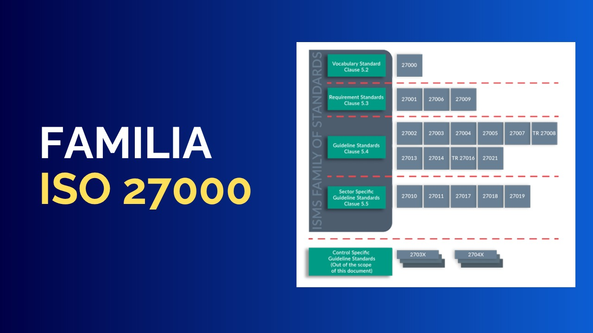
Características principales
Rasgos que distinguen a ISO 27001 de un simple listado de buenas prácticas técnicas.
- Enfoque basado en riesgos, no en una lista fija de tareas.
- Aplica un ciclo de mejora continua.
- Es certificable por un organismo externo independiente.
- Compatible con otras normas de gestión (ISO 9001, ISO 22301).
- Exige evidencia documentada: políticas, registros y procedimientos.
A diferencia de una checklist técnica, la norma pide justificar por qué se eligió — o se descartó — cada control.
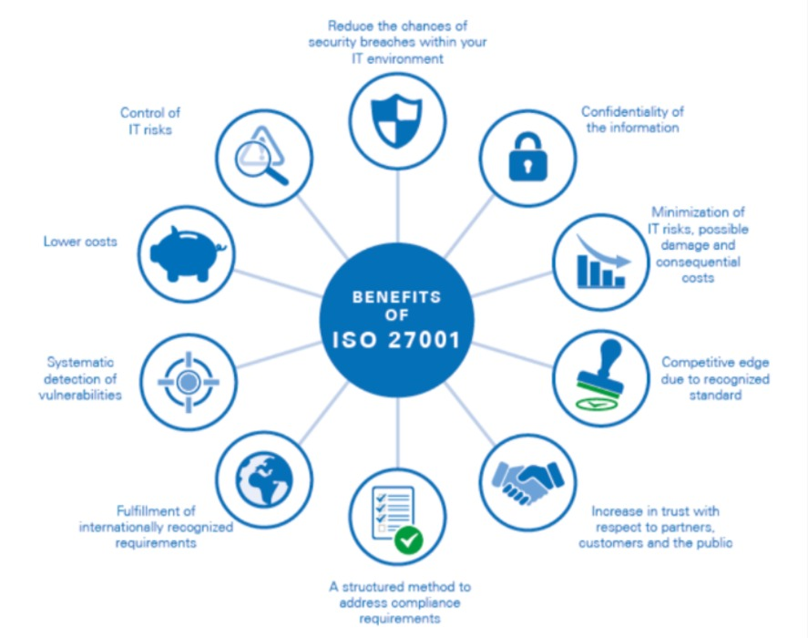
La tríada CIA
Los tres pilares que todo control de la norma busca sostener, sea cual sea su naturaleza técnica u organizacional.
Confidencialidad
La información solo es accesible para quienes están autorizados a conocerla.
Integridad
La información es exacta, completa y no ha sido alterada de forma indebida.
Disponibilidad
La información está accesible cuando una persona autorizada la necesita.
Al diseñar un control, siempre debería poder explicarse a cuál de estos tres pilares protege exactamente.
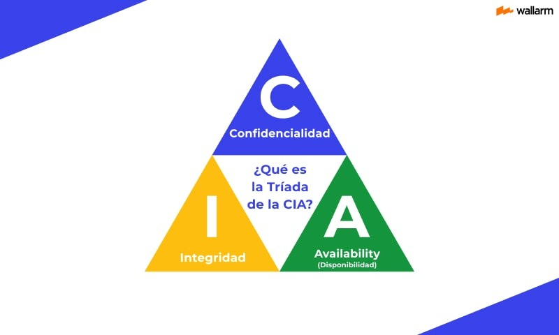
Tipos de información protegida
El SGSI no protege solo archivos digitales: abarca cualquier forma en la que exista información valiosa para la organización.
- Digital: bases de datos, correos electrónicos, copias de respaldo.
- Física: documentos impresos, contratos, expedientes.
- En tránsito: datos que viajan por redes, APIs o servicios en la nube.
- Intangible: conocimiento, credenciales y activos de propiedad intelectual.
Muchas organizaciones subestiman el riesgo de la información física e intangible frente a la puramente digital.
Alcance y estructura
Dónde aplica la norma dentro de una organización y cómo está organizada por dentro, desde sus cláusulas obligatorias hasta el catálogo de controles del Anexo A.
- 09Alcance y aplicabilidad
- 10Estructura de la norma
- 11Anexo A: dominios de control
- 12Categorías de controles
Alcance y aplicabilidad
La norma es deliberadamente flexible: cada organización define su propio alcance según su realidad operativa.
De cualquier tamaño, desde pymes hasta corporaciones.
Instituciones de gobierno y organismos estatales.
Centros de datos, software y servicios en la nube.
Universidades, ONGs e instituciones financieras.
Un alcance mal definido —demasiado amplio o demasiado angosto— es una de las causas más comunes de fallo en la certificación.
El alcance real se formaliza en la Declaración de Aplicabilidad (SoA).
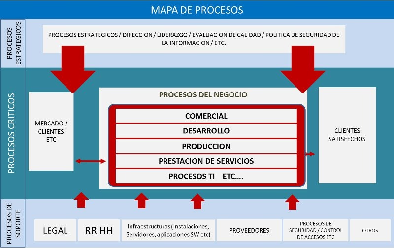
Estructura de la norma
Las cláusulas 4 a 10 siguen la estructura común de alto nivel (Anexo SL) que comparten todas las normas ISO de gestión.
- 4
Contexto de la organización
Entender el entorno interno y externo, y las partes interesadas.
- 5
Liderazgo
Compromiso de la alta dirección y política de seguridad.
- 6
Planificación
Tratamiento de riesgos y objetivos de seguridad.
- 7
Soporte
Recursos, competencias, comunicación y documentación.
- 8
Operación
Ejecución de los procesos y controles planificados.
- 9
Evaluación del desempeño
Monitoreo, auditoría interna y revisión por la dirección.
- 10
Mejora
Corrección de no conformidades y mejora continua.
Estas siete cláusulas son obligatorias: a diferencia del Anexo A, aquí no existe la opción de excluir requisitos.
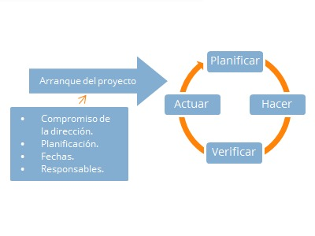
Anexo A: dominios de control
Un catálogo de referencia con los controles que una organización puede seleccionar según sus riesgos identificados.
- En la versión 2022 contiene 93 controles.
- Reemplaza la estructura previa de 14 dominios (versión 2013).
- Ningún control es obligatorio en sí mismo: se justifica su inclusión o exclusión en la SoA.
- Cada control incluye atributos: tipo, propiedades de seguridad, conceptos y capacidades.
El Anexo A funciona como un menú de referencia, no como una lista de tareas que deban cumplirse todas.
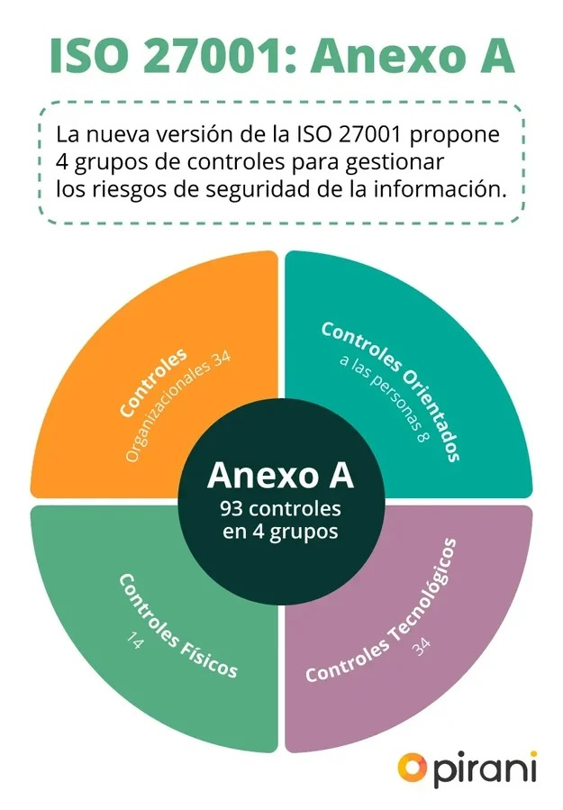
Categorías de controles
Los 93 controles del Anexo A se agrupan en cuatro grandes categorías, según su naturaleza.
Políticas, roles, gestión de proveedores y cumplimiento.
Contratación, capacitación y acuerdos de confidencialidad.
Control de accesos, equipos y perímetros seguros.
Criptografía, redes, malware y copias de seguridad.
El mayor peso está en los controles tecnológicos y organizacionales, reflejo de dónde suele concentrarse el riesgo actual.
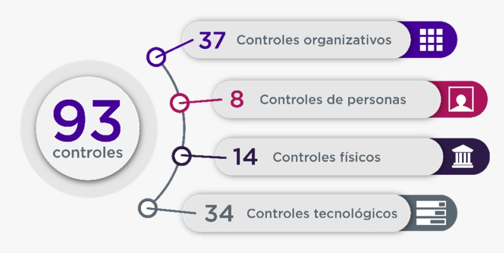
Gestión del sistema
El sistema que sostiene todo lo anterior: qué es el SGSI, cómo mejora con el tiempo y quiénes son responsables de que funcione día a día.
- 13El SGSI
- 14Ciclo de mejora continua
- 15Roles y responsabilidades
- 16Gestión de riesgos
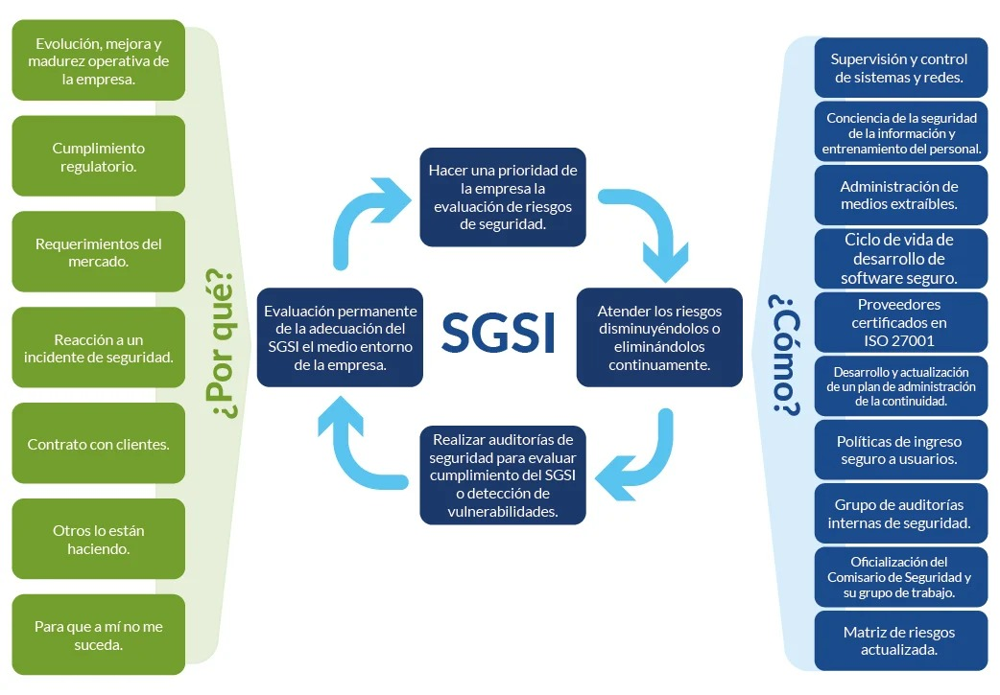
El SGSI
El Sistema de Gestión de Seguridad de la Información es el corazón de la norma: no es un documento, es un sistema vivo.
- Conjunto de políticas, procesos, procedimientos y controles interrelacionados.
- Gestiona los riesgos de seguridad de forma continua, no como evento único.
- Involucra a personas, tecnología y procesos de negocio.
- Requiere el compromiso explícito de la alta dirección.
El error más común es tratar al SGSI como papeleo para la auditoría, en vez de una práctica de gestión diaria.
Ciclo de mejora continua
El SGSI se sostiene en un ciclo que nunca se detiene: cada vuelta deja al sistema un poco más maduro que la anterior.
- P
Plan
Identificar riesgos y planificar los controles necesarios.
- D
Do
Implementar y operar el SGSI de acuerdo a lo planificado.
- C
Check
Monitorear, medir y auditar el desempeño del sistema.
- A
Act
Corregir desviaciones y mejorar continuamente el SGSI.
Este ciclo es el motor detrás de la cláusula 10 (mejora): sin él, la certificación se congela en el tiempo.
Roles y responsabilidades
Un SGSI eficaz reparte responsabilidades claras en toda la organización, no solo en el área de tecnología.
- Alta dirección: aprueba la política y asigna recursos.
- Oficial de Seguridad (CISO): coordina el día a día del SGSI.
- Comité de seguridad: revisa riesgos e incidentes relevantes.
- Colaboradores: cumplen las políticas y reportan incidentes.
- Auditor interno: verifica el cumplimiento de forma independiente.
La seguridad de la información deja de ser "solo un tema de TI" cuando estos roles quedan claramente definidos.
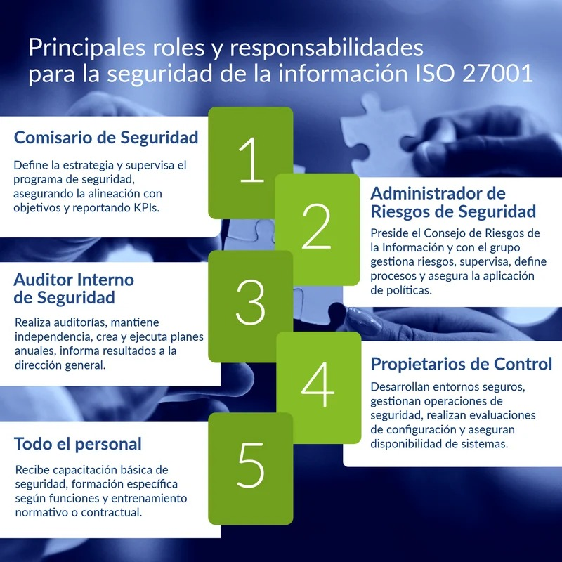
Gestión y análisis de riesgos
El núcleo metodológico de la norma: nada se controla si antes no se ha evaluado su riesgo de forma estructurada.
- 1
Identificar activos
Reconocer qué información y recursos deben protegerse.
- 2
Identificar amenazas
Detectar amenazas y vulnerabilidades sobre esos activos.
- 3
Evaluar
Estimar probabilidad e impacto de cada riesgo.
- 4
Tratar
Evitar, mitigar, transferir o aceptar el riesgo.
La metodología debe quedar documentada para que el análisis sea repetible, no intuitivo ni dependiente de una sola persona.
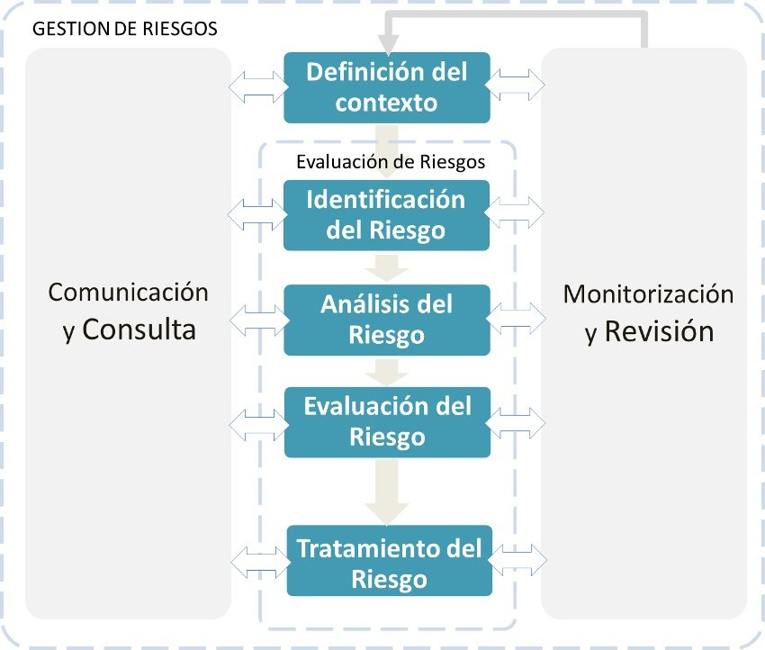
Implementación y certificación
Las reglas obligatorias, el camino paso a paso y el proceso de auditoría necesarios para obtener y mantener el certificado.
- 17Reglas para certificarse
- 18Proceso de implementación
- 19Auditoría y certificación
- 20Vigencia y no conformidades
Reglas y requisitos para certificarse
Condiciones mínimas obligatorias que la norma exige antes de que una organización pueda pasar por una auditoría de certificación.
Ninguno de estos puntos es opcional: su ausencia es motivo directo de no conformidad en la auditoría.
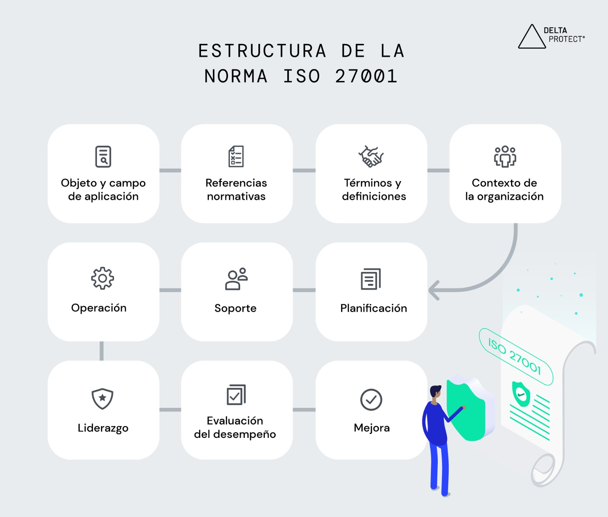
Proceso de implementación
La ruta típica que sigue una organización desde el diagnóstico inicial hasta la auditoría de certificación.
- 1
Diagnóstico inicial
Análisis de brechas (gap analysis) frente a la norma.
- 2
Alcance y política
Definir el alcance del SGSI y la política de seguridad.
- 3
Evaluar riesgos
Identificar y valorar riesgos sobre los activos de información.
- 4
Implementar controles
Seleccionar y poner en marcha los controles del Anexo A.
- 5
Capacitar
Formar al personal en las nuevas políticas y procedimientos.
- 6
Auditoría interna
Verificar el cumplimiento antes de la auditoría externa.
- 7
Revisión por dirección
La alta dirección evalúa el desempeño del SGSI.
- 8
Auditoría de certificación
Evaluación final por el organismo certificador.
El tiempo típico de implementación completa varía entre 6 y 18 meses, según el tamaño y madurez de la organización.
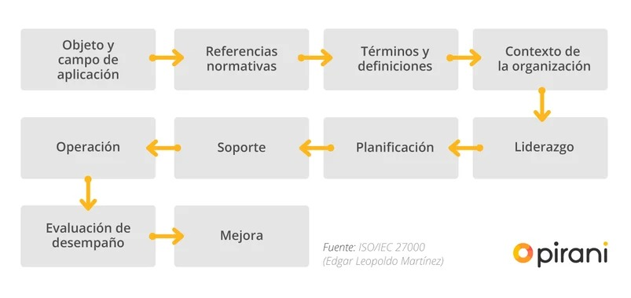
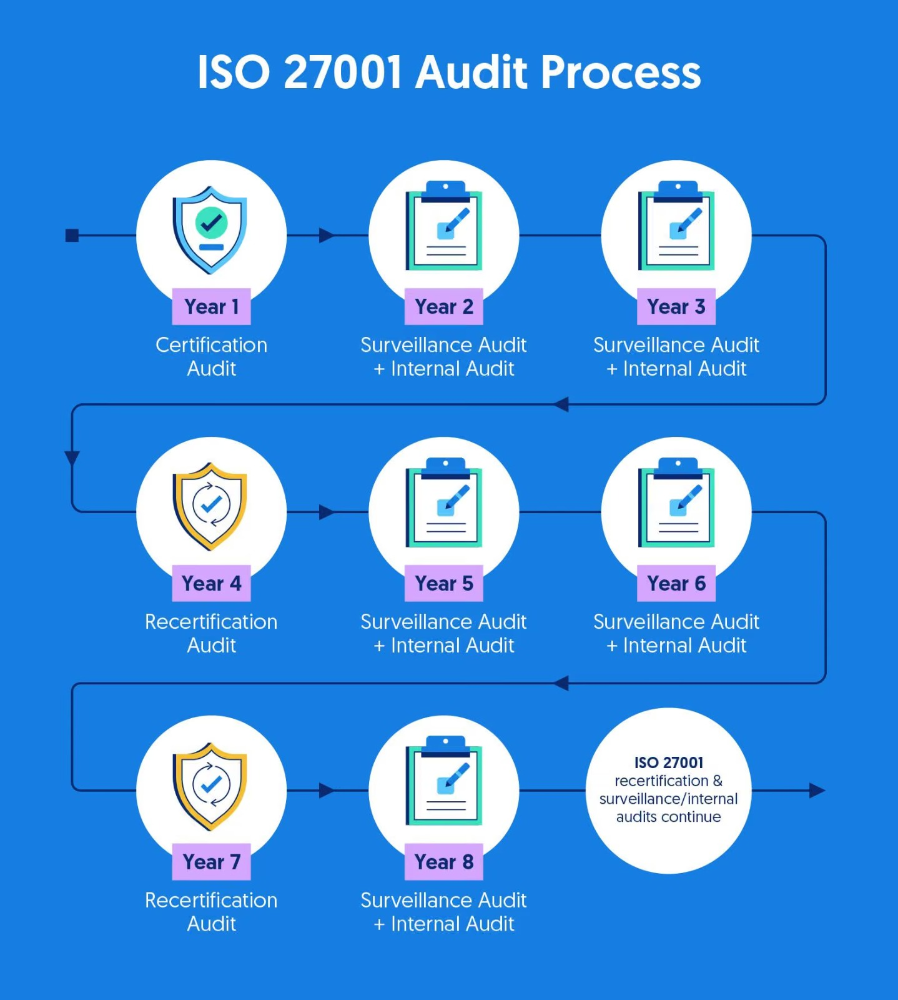
Proceso de auditoría y certificación
La certificación la otorga un tercero independiente, no la organización misma.
- Auditoría Fase 1: revisión documental del SGSI.
- Auditoría Fase 2: verificación en sitio de la implementación real.
- Realizada por un organismo de certificación acreditado.
- El certificado se emite si no existen no conformidades mayores.
Los auditores no evalúan la teoría: buscan evidencia de que los controles operan en el día a día.
Vigencia, renovación y no conformidades
La certificación no es permanente: exige seguimiento y evidencia constante después de obtenida.
Vigencia estándar del certificado ISO 27001.
Auditorías de seguimiento (vigilancia) cada año.
Requiere un plan de acción con plazo definido.
Puede suspender o retirar la certificación.
Perder la certificación por no conformidades no revertidas puede dañar tanto la operación como la reputación de la empresa.
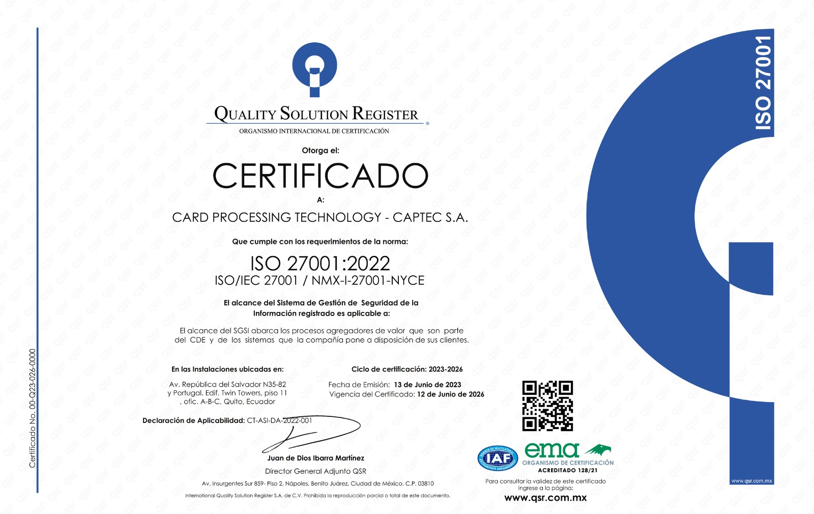
Impacto y cierre
Qué gana y qué le cuesta a una organización certificarse, cómo se compara con otros marcos, y las conclusiones finales de todo lo revisado.
- 21Ventajas y beneficios
- 22Retos y desventajas
- 23Normas relacionadas
- 24Casos y conclusiones
Ventajas y beneficios
Razones por las que muchas organizaciones deciden invertir en certificarse, más allá del cumplimiento normativo.
- Reduce la probabilidad y el impacto de incidentes de seguridad.
- Genera confianza ante clientes, socios y reguladores.
- Facilita el cumplimiento legal, como la protección de datos personales.
- Mejora la continuidad del negocio ante incidentes.
- Puede ser un diferenciador competitivo o requisito comercial.
En sectores donde la norma es un requisito comercial, no certificarse puede significar quedar fuera de licitaciones.
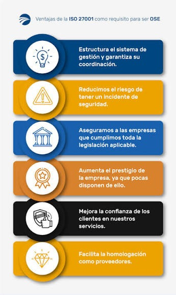
Retos y desventajas
La certificación también implica un costo real que debe planificarse desde el inicio del proyecto.
- Costos de implementación, consultoría y certificación.
- Requiere tiempo y compromiso sostenido de la alta dirección.
- Puede generar una carga documental excesiva si se gestiona mal.
- Resistencia al cambio cultural dentro de la organización.
Automatizar la recolección de evidencias es una de las formas más efectivas de reducir la carga documental.
Normas relacionadas y comparación
ISO 27001 convive con otros marcos de seguridad ampliamente usados en el mercado internacional.
Elegir entre estos marcos no es excluyente: depende del mercado y el cliente al que responde la organización.
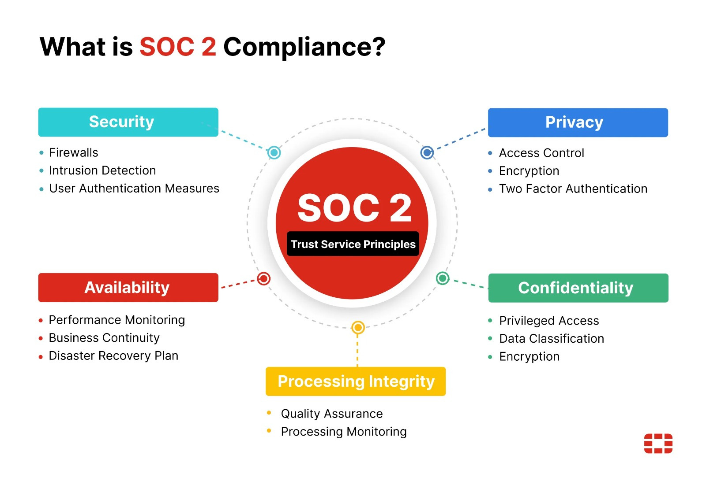
Casos de aplicación y conclusiones
Un cierre a lo recorrido: dónde se aplica la norma en la práctica y qué queda como idea central.
- Sectores frecuentes: banca, salud, tecnología, gobierno y telecomunicaciones.
- Empresas de servicios en la nube suelen exigirla a sus proveedores.
- ISO 27001 no es solo un certificado: es una cultura de gestión de riesgos.
- Sienta las bases de una organización resiliente ante amenazas digitales.
Más que un objetivo final, la certificación es un punto de partida: el SGSI debe seguir operando después de obtenerla.
Gracias
ISO/IEC 27001 — Sistema de Gestión de Seguridad de la Información
Grupo 4 · Ingeniería de Sistemas · UNJFSC